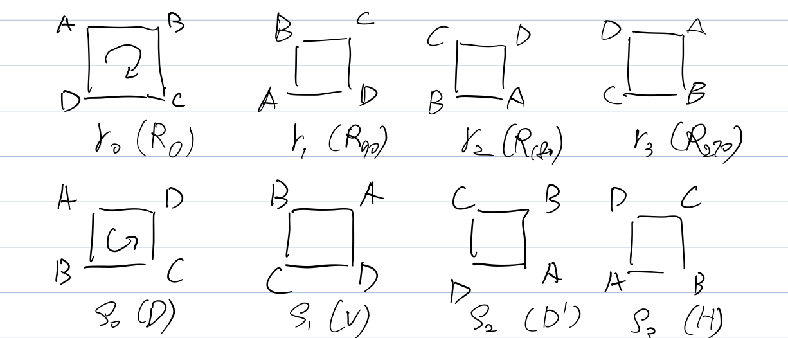

Informally, a group is a set in which we can “multiply” and “divide”.
First Examples
$(\Z, +)$
The integers ${ …, -2, -1, 0, 1, 2, …}$ form a group under addition.
- $+$ takes two elements of $\Z$ and spits out another element of $\Z$. We say $\Z$ is closed under $+$.
- e.g. $1+1=2$, $2+3=5$, $(-1)+1=0$, …
- $0$ is special. $0+a=a$ and $a+0=a$ for any $a \in \Z$. We say $0$ is the identity of $(\Z,+)$.
- Are there other identity in $(\Z,+)$?
- $a$ and $-a$ have a special relationship. $a+(-a)=0$ where $0$ is the identity. We say $a$ and $-a$ are the inverse of each other.
- $+$ is associative. $(a+b)+c=a+(b+c)$
- $+$ is commutative. $a+b=b+a$. We say $(\Z, +)$ is a commutative, or Abelian group.
$(\Q,+)$
The rational numbers under $+$ form a group.
- $+$ takes two rational number and spits out another.
- Identity is again $0$.
- Inverse of $\frac{a}{b}$ is $-\frac{a}{b}$
- $+$ is still associative. $$(\frac{a}{b} + \frac{c}{d}) + \frac{e}{f} = \frac{a}{b} + (\frac{c}{d} + \frac{e}{f})$$
- $+$ is commutative. $$\frac{a}{b} + \frac{c}{d} = \frac{ad+bc}{bd} = \frac{c}{d} + \frac{a}{b}$$ We say $(\Q,+)$ is a Abelian group.
$(\Q^*, \times)$
Q: Is $(\Q, \times)$ a group?
- Closed? Yes. $\frac{a}{b} \times \frac{c}{d} = \frac{ac}{bd}$
- Identity? $1$. $\frac{a}{b} \times 1 = \frac{a}{b}$
- Inverse?
- $0 \times \frac{a}{b} = 1$, then $\frac{a}{b}=?$. $0$ does not have a inverse!
- Associative? Yes. $(\frac{a}{b} \times \frac{c}{d}) \times \frac{e}{f} = \frac{a}{b} \times (\frac{c}{d} \times \frac{e}{f})$
- Abelian? Yes. $\frac{a}{b} \times \frac{c}{d} = \frac{c}{d} \times \frac{a}{b}$
Consider $\Q^* = \Q \setminus {0}$, then every $\frac{a}{b} \in \Q$ has an inverse $\frac{b}{a}$ now.
$(\R^*, \times)$
$\R^* = \R \setminus {0}$. The non-zero real numbers form a group under $\times$.
- Closed? Yes.
- Identity: $1$.
- Inverse: $\frac{1}{a}$
- Associative? Yes.
- Abelian? Yes.
$(\C^*,\times)$
$\C^* = \C \setminus {0+0i}$. Non-zero complex numbers form a group under $\times$.
$(\Z,\times)$
Q: Can we do the same thing with $\Z$?
We have to throw more elements away. e.g. $2 \times a \neq 1$. In fact, we have to throw out everything except $1$ and $-1$. Thus, $\Z^* = {1, -1}$.
This group is small, so we can write down the structure in a table.
| $\times$ | $1$ | $-1$ |
|---|---|---|
| $1$ | $1$ | $-1$ |
| $-1$ | $-1$ | $1$ |
This table is called the Cayley table of the group. We can make Cayley table for any finite group. We can list the group elements along the top and left.
| $\cdot$ | $g_1$ | $g_2$ | $…$ | $g_n$ |
|---|---|---|---|---|
| $g_1$ | ||||
| $g_2$ | ||||
| $…$ | ||||
| $g_n$ |
$(GL_n(\R), \cdot)$
All $n \times n$ invertible matrixes form a group under matrix multiplication. GL stands for general linear. $GL_n(\R) = {A \in \R^{n \times n} : det(A) \neq 0 }$.
- Closed? Yes. $det(AB) = det(A) det(B) \neq 0$
- Identity: $I = \begin{bmatrix} 1 & 0 \\ 0 & 1 \end{bmatrix}$. $AI=IA=A$
- Inverse: $AA^{-1} = I$
- Associative? Yes. $(AB)C=A(BC)$ by linear algebra theorem.
- Abelian? No. $AB \neq BA$, so it is NOT an Abelian group.
Definition
Formally, what is a group?
- Definition - Group
- A Group is a set $G$ together with a binary operation $\cdot : G \times G \to G$ satisfies:
- $\cdot$ is associative. $\forall a, b, c \in G ; (a \cdot b) \cdot c = a \cdot (b \cdot c)$.
- $G$ contains an element $e$ such that $\forall a \in G ; a \cdot e = e \cdot a = a$.
- For any element $a \in G$, there exists an element $a^{-1} \in G$ such that $a \cdot a^{-1} = a^{-1} \cdot a = e$.
Note we are implicitly saying that a group is closed under the operation by writing $\cdot : G \times G \to G$.
Let $a, b \in G$. We say $a$, $b$ are commutative under operation $\cdot$ if $a \cdot b = b \cdot a$
A commutative, or Abelian group is a group such that $\forall a,b \in G ; a \cdot b = b \cdot a$.
- Definition - Order
- The order of group $G$ is the number of elements in $G$, denoted by $|G|$.
For example,
- $\Z,\Q,\R,\C$ have infinite order.
- $|{1,i,-1,-i}| = 4$
- $|\Z^*| = 2$
Properties of Groups
Let $G$ be a group under operation $\cdot$. Then the following properties hold.
- Proposition 1.1
- The identity element $e \in G$ is unique.
Proof:
Suppose there are two identities $e, f \in G$. Then $e = e \cdot f = f \cdot e = f$. Hence $e=f$ is unique.
- Proposition 1.2
- If $a \in G$, then the inverse of $a$, $a^{-1}$ is unique.
Proof:
Suppose $a \cdots b = b \cdots a = e$ and $a \cdot a = c \cdot a = e$. Then $c = c \cdot e = c \cdot (a \cdot b) = (c \cdot a) \cdot b = e \cdot b = b$. Hence $a^{-1} = c = b$ is unique.
- Proposition 1.3
- If $a, b, c \in G$ and $ab = ac$, then $b=c$
Proof:
Since $a$ has an inverse, $a^{-1} \in G$, $$\begin{aligned} ab &= ac \\ a^{-1}(ab) &= a^{-1}(ac) & \text{inverse} \\ (a^{-1}a)b &= (a^{-1}a)c & \text{associativity} \\ eb &= ec & \text{inverse} \\ b &= c & \text{identity} \\ \end{aligned}$$
Q: What is $(a^{-1})^{-1}$? $$\begin{aligned} (a^{-1})^{-1} &= (a^{-1})^{-1} \cdot e \\ &= (a^{-1})^{-1} \cdot (a^{-1} \cdot a) \\ &= ((a^{-1})^{-1} \cdot a^{-1}) \cdot a \\ &= e \cdot a \\ &= a \\ \end{aligned}$$
- Definition - $a^n$
- If $a \in G$ and $n \in \Z$ then $$a^n = \begin{cases} a \cdot …\cdot a \ \text{for n times} & n > 0 \\ e & n = 0 \\ a^{-1} \cdot …\cdot a^{-1} \ \text{for -n times} & n < 0 \\ \end{cases}$$
- Proposition 1.4
- For any $m,n \in \Z$, $a^m \cdot a^n = a^{m+n}$, and $(a^m)^n = a^{mn}$
Remark: We usually write $a \cdot b$ as $ab$
More Examples
$(\Z_n, +)$
$\Z_n = {[0], [1], … ,[n-1]}$ and $[a] = {b \in \Z : n \mid b-a }$. $[a]$ is the set of all integers with same remainder as $a$ after divided by $n$.
e.g. $\Z_3 = {[0], [1], [2]}$ where $[0] = {0,3,6,9,…}$, $[1] = {1,4,7,10,…}$, and $[2] = {2,5,8,11,…}$
We simply write $[a]$ as $a$, that is $\Z_3 = {1,2,3}$.
We know that for $[a], [b] \in \Z_n$, $[a] + [b] = [a+b] \mod n$.
e.g. $1+2=0 \mod 3$, $2+2=1 \mod 3$
With this operation, addition modulo $n$, elements in $\Z_n$ form a group.
e.g. $(\Z_3, +)$
| $+$ | $0$ | $1$ | $2$ |
|---|---|---|---|
| $0$ | $0$ | $1$ | $2$ |
| $1$ | $1$ | $2$ | $0$ |
| $2$ | $2$ | $0$ | $1$ |
- Closed? Yes
- Identity: $0$
- Inverse: $n-a$
- Associative? Yes
- Abelian? Yes
- Order: $n$
$(\Z_n^*, \times)$
Can we turn $(\Z_n, +)$ into a multiplicative group? Consider $\Z_4={0, 1, 2, 3}$. The Cayley table looks like:
| $\times$ | $0$ | $1$ | $2$ | $3$ |
|---|---|---|---|---|
| $0$ | $0$ | $0$ | $0$ | $0$ |
| $1$ | $0$ | $1$ | $2$ | $3$ |
| $2$ | $0$ | $2$ | $0$ | $2$ |
| $3$ | $0$ | $3$ | $2$ | $1$ |
From the table we observe that:
- The identity has to be $1$.
- $0$ and $2$ do not have inverses.
- $1$ and $3$ are fine.
Why $[a] \times [b] = [ab] \mod n$? $$\begin{aligned} (q_1 n + r_1)(q_2 n + r_2) &= k_1 k_2 n^2 + k_1 r_2 n + k_2 r_1 n + r_1 r_2 \\ &= s n + r_1 r_2 \\ \end{aligned}$$
- Corollary
- An integer $a$ has a solution to equation $ax = 1 \mod n$ if and only if $a$ and $n$ are coprime.
We can turn $\Z_n$ into a multiplicative group by keeping those coprime to $n$. Thus, $$\begin{aligned} \Z_n^* &= {a \in \Z_n : ax = 1 \mod n ; \exists x \in \Z_n } \\ &= {a \in \Z_n : gcd(a,n) = 1} \\ \end{aligned}$$
e.g. $\Z_{12}^* = {1, 5, 7, 11}$ where $|\Z_{12}^*| = 4$
| $\times$ | $1$ | $5$ | $7$ | $11$ |
|---|---|---|---|---|
| $1$ | $1$ | $5$ | $7$ | $11$ |
| $5$ | $5$ | $1$ | $11$ | $7$ |
| $7$ | $7$ | $11$ | $1$ | $5$ |
| $11$ | $11$ | $7$ | $5$ | $1$ |
e.g. $\Z_5^* = {1, 2, 3, 4}$ where $|\Z_5^*| = 4$
| $\times$ | $1$ | $2$ | $3$ | $4$ |
|---|---|---|---|---|
| $1$ | $1$ | $2$ | $3$ | $4$ |
| $2$ | $2$ | $4$ | $1$ | $3$ |
| $3$ | $3$ | $1$ | $4$ | $5$ |
| $4$ | $4$ | $3$ | $2$ | $1$ |
- Closed? Yes
- Identity: $1$
- Inverse: $aa^{-1} = 1 \mod n$
- Associative? Yes
- Abelian? Yes
- Order: $\phi (n)$ - the Euler’s totient function.
The Symmetric Group $S_n$
For each integer $n \ge 1$, define the symmetric group $S_n$ to be set of all permutations $\sigma: {1,2,…,n} \to {1,2,…,n}$. That is, $S_n = { \sigma : {1,…,n} \to {1,…,n}: \sigma \text{ is bijective}}$.
e.g. Let $\sigma, \tau, \pi: {1,2,3} \to {1,2,3}$ and define
| $\sigma$ | $\tau$ | $\pi$ | |
|---|---|---|---|
| $1$ | $2$ | $2$ | $2$ |
| $2$ | $1$ | $3$ | $3$ |
| $3$ | $3$ | $1$ | $2$ |
Then, $\sigma$ and $\tau$ are elements of $S_3$, but $\pi$ is NOT.
$S_n$ forms a group under $\cdot$, function composition.
e.g. Consider $\sigma \cdot \tau$
| $\sigma \cdot \tau$ | |
|---|---|
| $1$ | $1$ |
| $2$ | $3$ |
| $3$ | $2$ |
A more compact way to write $\sigma$ and $\tau$ is to use an array. $$\sigma = \begin{pmatrix} 1 & 2 & 3 \\ 2 & 1 & 3 \end{pmatrix} \qquad \tau = \begin{pmatrix} 1 & 2 & 3 \\ 2 & 3 & 1 \end{pmatrix}$$ In general, $$\pi = \begin{pmatrix} 1 & 2 & … & n \\ \pi(1) & \pi(2) & … & \pi(n) \end{pmatrix}$$
$(S_n, \cdot)$ is not Abelian for all $n \ge 3$. We already have $n=3$. To see $n > 3$, let $\sigma, \tau$ be permutations in $S_n$ that fix $4,5,..,n$ (i.e. $\sigma(4)=\tau(4)=4, …, \sigma(n)=\tau(n)=n$). Since we know that these are permutations on ${1,2,3}$ that don’t commute, we can pick values for $\sigma(1), \sigma(2), \sigma(3), \tau(1), \tau(2), \tau(3)$ so that $\sigma$ and $\tau$ don’t commute.
What is the order of $S_n$? $|S_n| = n \times (n-1) \times … \times 1 = n!$.
- Closed? Yes. CHECK!
- Identity: $e(x) = x$, the identity function.
- Inverse: $\sigma^{-1}$, the inverse function.
- Associative? Yes.
- Abelian? No, for all $n \ge 3$.
- Order: $n!$
The Dihedral Group $D_n$
The set $D_n$ ($n \ge 3$) is the set of symmetries of a regular n-gon. Here a symmetry is any movement that can be comes to the object while you’re looking away, that you won’t know has happened. Let’s start by looking at $D_4$, the symmetries of a square $\Box$. We will put imaginary labels on the square to keep track of the symmetries.

There are at most $8$ symmetries ($|D_4|=8$). Why? We have 4 choice for the top-left corner (a fixed vertex), then 2 choices for the “direction” of A, B, C, D, (an orientation). In general, $|D_n| = 2n$.
What is operation on this group? Composition of symmetries (movements).
e.g.
- $R_0 R_0 = R_0$
- $R_{90} R_{90} = R_{180}$
- $DD’ = R_{180}$
- $R_{270}H=D’$
- $HR_{270}=D$.
$D_4$ can be built using just a $90 \degree$ counter-clockwise rotation (or clockwise) and a diagonal flip (or, vertical, horizontal). $D_4 = { R_{90}^k, R_{90}^k F: 0 \le k < 4}$. In general, $D_n = { R^k, R^k F: 0 \le k < n}$, where $R$ is the counter-clockwise $\frac{2\pi}{n}$ rotation and $F$ is the flip over a fixed axis. We sometimes denote $R^k = r_k$ and $R_k F = s_k$.
Some useful algebra:
- $r_i r_j = r_{i+j}$
- $r_i s_j = s_{i+j}$
- $s_i r_j = s_{i-j}$
- $s_i s_j = r_{i-j}$
$D_4$ is non-Abelian. $r_3 s_3 = s_2$, but $s_3 r_3 = s_0$. In general, $D_n$ is non-Abelian. (can you prove that?)
- Closed? Yes
- Identity: $r_0$
- Inverse: $s_i^{-1}=s_i$, $r_i^{-1} = r_{-i}$
- Associative? Yes
- Abelian? No, for all $n \ge 3$.
- Order: $2n$
Direct Product
- Definition - Direct Product
- Let $(G,*)$, $(H, \star)$ be groups. We define the direct product of $G$ and $H$ by $(G \times H, \cdot)$ where $$G \times H = {(g,h) : g \in G, h \in H}$$ and $$(g,h) \cdot (g’,h,) = (g * g’, h \star h’)$$
e.g. $GL_2(\R) \times \Z_2$ $$(\begin{bmatrix}1 & 1 \\ 0 & 1 \end{bmatrix}, 0) \cdot (\begin{bmatrix}1 & 0 \\ 1 & 1\end{bmatrix}, 1) = (\begin{bmatrix} 2 & 1 \\ 1 & 1 \end{bmatrix}, 1)$$